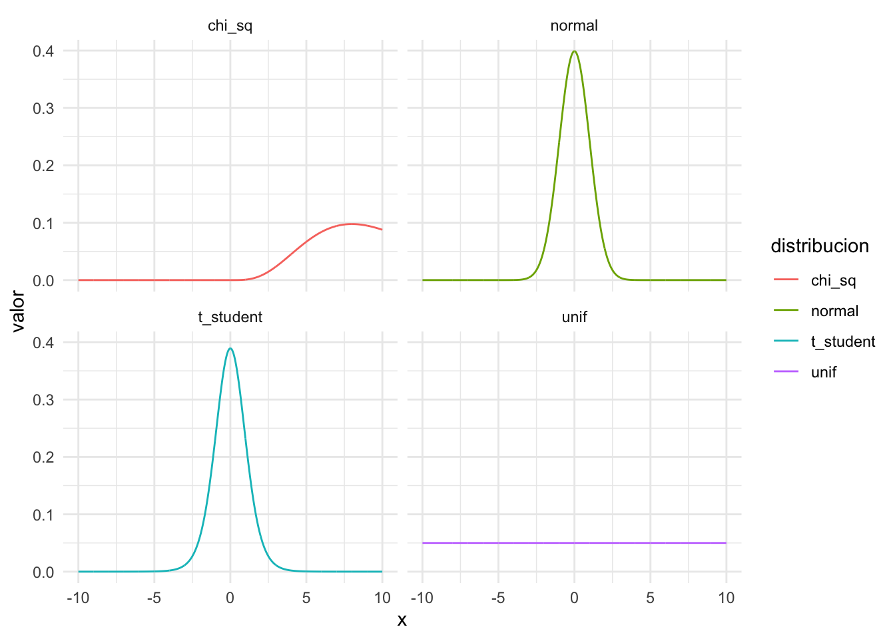
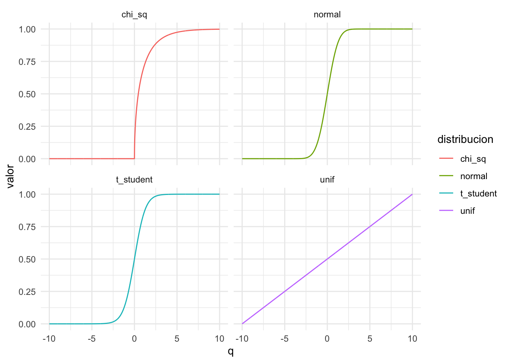
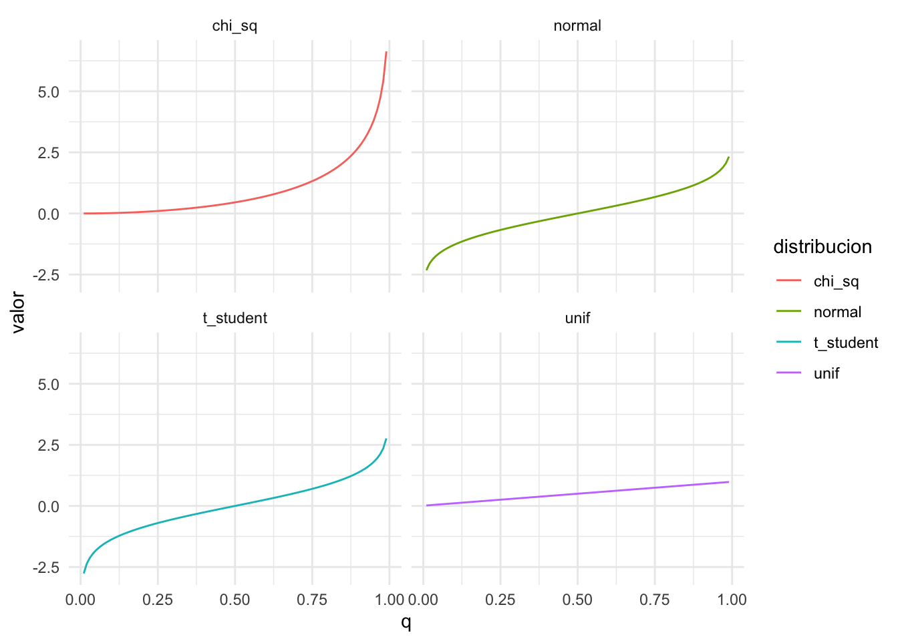
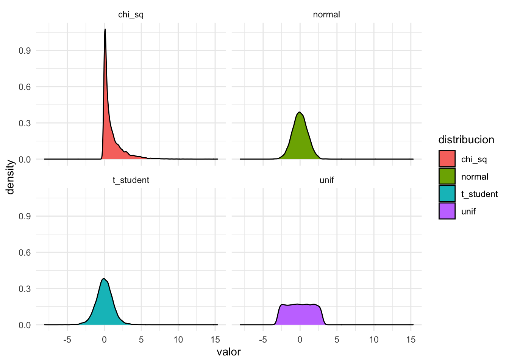

Chapter 11 Estadística básica
Para esta sección de estadística básica veremos funciones asociadas a distribuciones. Estas son de 4 tipos para varios tipos de distribución:
# dnorm, dt, dchisq, df funcion de distribución de la normal, t-student, chisquared, f
# Nos dice la 'altura' en los puntos dados. Para distribuciones continuas no es muy util, pero para discretas si
dnorm(x = c(-100, -1, 0, 1, 100),mean = 0, sd = 1)## [1] 0.0000000 0.2419707 0.3989423 0.2419707 0.0000000dbinom(x = c(0,1,2), size = 2, prob = .5)## [1] 0.25 0.50 0.25# qnorm, qt, qchisq, qf la funcion quantile de las distribuciones. Recibe como argumento la probabilidad y devuelve el valor del quantil
qnorm(p = c(0,.5,1), mean = 0, sd = 1) # en que valor te acumula 0%, 50% y 100%## [1] -Inf 0 Inf# pnorm, pt, pchisq, pf la funcion inversa a la quantile. cuanta probabilidad te acumula en los valores dados
pnorm(q = c(-Inf, 0, Inf), mean = 0, sd = 1)## [1] 0.0 0.5 1.0# rnorm, rt, rchisq, rf te devuelve random samples de la distribución en cuestión
rnorm(n = 10, mean = 0, sd = 1)## [1] -0.94178789 -0.33902910 -1.15299808 0.05328983 -1.65634251 0.42745287
## [7] -0.60012918 -1.51585772 0.02547545 -0.5294966211.1 Ejercicios de práctica
11.1.1 Ejercicio 10
library(tidyverse)
data.frame(x = c(seq(-10, 10, by = .01))) %>%
mutate(
normal = dnorm(x = x, mean = 0, sd = 1),
t_student = dt(x = x, df = 10),
chi_sq = dchisq(x = x, df = 10),
unif = dunif(x = x, min = min(x), max = max(x))
) %>%
gather(distribucion, valor, normal:unif) %>%
ggplot(aes(x = x, y = valor, color = distribucion))+
geom_line()+
facet_wrap(~distribucion, ncol = 2)+
theme_minimal()
11.1.2 Distribution function
data.frame(q = c(seq(-10, 10, by = .01))) %>%
mutate(
normal = pnorm(q = q, mean = 0, sd = 1),
t_student = pt(q = q, df = 10),
chi_sq = pchisq(q = q, df = 1),
unif = punif(q = q, min = min(q), max = max(q))
) %>%
gather(distribucion, valor, normal:unif) %>%
ggplot(aes(x = q, y = valor, color = distribucion))+
geom_line()+
facet_wrap(~distribucion, ncol = 2)+
theme_minimal()
11.1.3 Quantile function
data.frame(q = c(seq(0.01, .99, by = .01))) %>%
mutate(
normal = qnorm(p = q, mean = 0, sd = 1),
t_student = qt(p = q, df = 10),
chi_sq = qchisq(p = q, df = 1),
unif = qunif(p = q, min = min(q), max = max(q))
) %>%
gather(distribucion, valor, normal:unif) %>%
ggplot(aes(x = q, y = valor, color = distribucion))+
geom_line()+
facet_wrap(~distribucion, ncol = 2)+
theme_minimal()
11.1.4 Random function
data.frame(
normal = rnorm(n = 10000, mean = 0, sd = 1),
t_student = rt(n = 10000, df = 10),
chi_sq = rchisq(n = 10000, df = 1),
unif = runif(n = 10000, min = -3, max = 3)
) %>%
gather(distribucion, valor, normal:unif) %>%
ggplot(aes(x = valor, fill = distribucion))+
geom_density()+
facet_wrap(~distribucion, ncol = 2)+
theme_minimal()